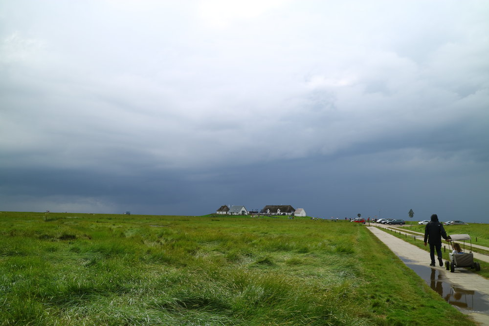

notiz.
Sonntag, 08. Oktober 2017,
Ach so. Wer jetzt die Fotos anschaut und sich fragt, wer so die handelnden Personen abgesehen von meiner eigenen Kernfamilie sind ..
- an der Nordsee waren wir teilweise mit Susannes Eltern unterwegs
- bei einem kurzen Zwischenstopp in Büdelsdorf haben wir einen Kollegen getroffen, den ich von der Arbeit her kenne
- in Eckernförde haben wir Freunde besucht, die aus Ulm da rauf gezogen sind
- in Tirol waren meine Eltern mit dabei
- und mein Freund Norbert aka Bile
- und meine Tante Piz
- und Susannes Bruder Simon mit Familie
norden.
Sonntag, 08. Oktober 2017,
So, und jetzt folgt der zweite Streich ..
Im Sommer 2017 waren wir auch unterwegs, und zwar zuerst an der Nordsee (auf Nordstrand, um genau zu sein), dann an der Ostsee (Eckernförde), am Rückweg noch in Kassel und danach eine Woche in Tirol. Da hab ich natürlich auch so einige Fotos gemacht. Die Gallerie dazu findet sich hier.
Teaser-Bild zum Thema Nordsee (aufgenommen auf der Hamburger Hallig):
